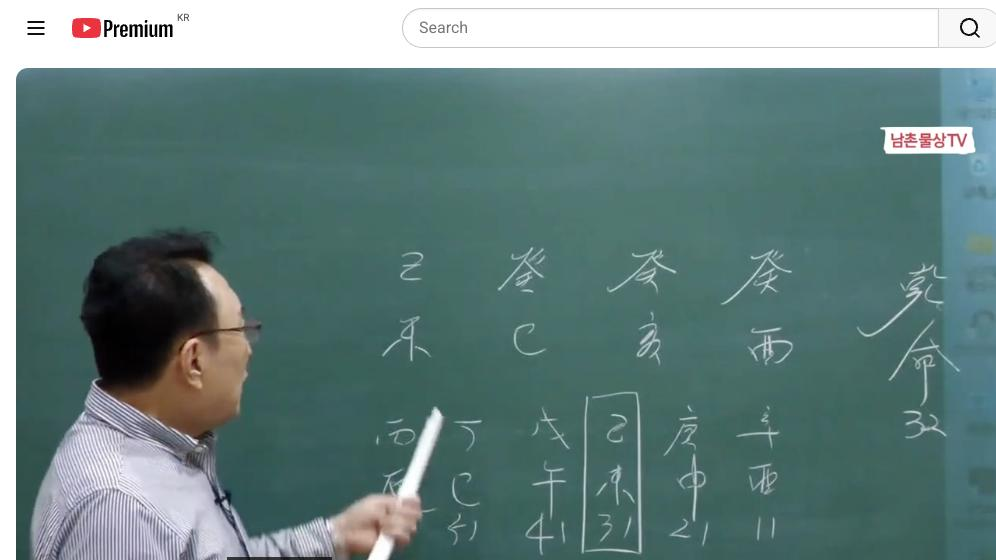
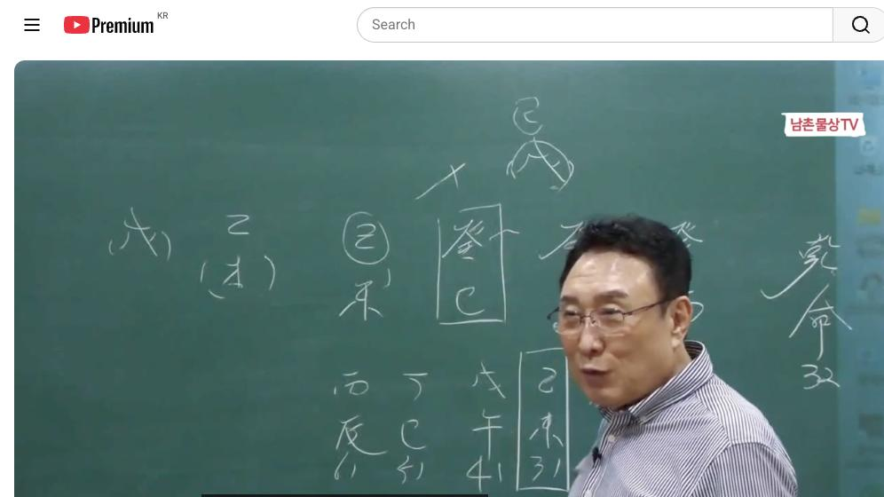
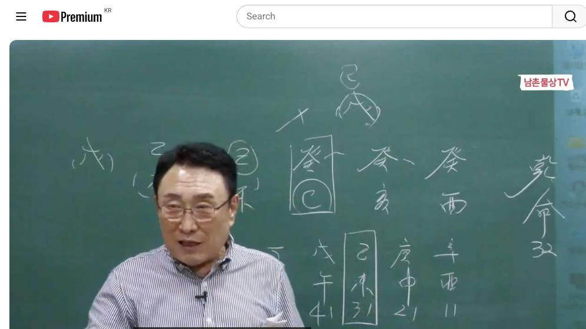
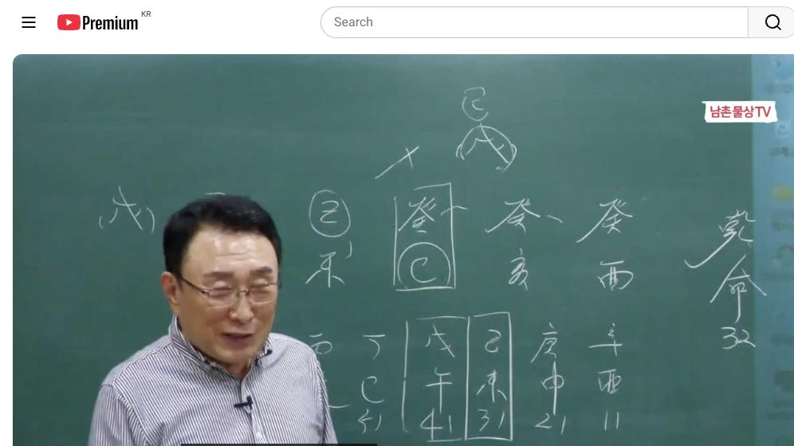

남촌물상TV 전체 문서 › 동영상 V0067
[실전사례]35 계수가 세 개인 사주 희망인가? 절망인가? 상담문의 : 010-3139-6645

| 문서 번호 | V0067 (동영상) |
|---|---|
| 영상 URL | https://www.youtube.com/watch?v=-HE1K05fpRk |
| 영상 ID | -HE1K05fpRk |
| 게시일 | 2024-04-18 |
| 길이 | 22:08 (1328초) |
| 조회수 | 1,019회 (수집 시점 기준) |
| 카테고리 | Howto & Style |
| 자막 | ko (자동생성) |
| 수집 시각 | 2026-08-30 19:08 (KST) |
영상 설명 (YouTube 설명 원문 그대로)
계수가 세 개인 사주 희망인가? 절망인가? #실전사례 #계수 #사주
전체 자막 (463구간 · 타임스탬프 클릭 시 해당 장면으로 이동)
[0:01][음악]
[0:04]이제 이런 사주를 여러분들 이제
[0:07]접하게 되시면 계유 개해 계사 을미
[0:11]이렇게 보세요 을미네 아 기미 김미
[0:15]기미 기미
[0:16]기미 자 그러면 제가 항시 하는
[0:20]얘기가 그 또랑 물이 세 개 합하면
[0:22]뭔 물이 된다고 큰물 임수가 된다
[0:26]그럼 작은 땅으로 막을 수 없다면
[0:28]어디로 가라로 해외로 가라 이렇게 뭐
[0:31]간단하잖아 답이 이렇게 쉽게 풀릴 수
[0:34]있어요 자
[0:36]그러면이 기토를 저 물을 막을 수
[0:39]있을까요
[0:40]없을까요 없잖아요 못 막아요 그럼
[0:44]하다 뭐에 목이 심어진다 men
[0:49]그나마 우리가 섬이 되겠죠 그림상으로
[0:53]근데 천간에서 끌을 목이 하나도
[0:56]없어요 그 탁수의 개념을 가지고 있지
[1:00]기토가 먹 끌어 본인이 끌어 끌어온
[1:04]것은 기초에서 끌어온 거 내가 끌어
[1:05]거 남이 끌어 준 거예요
[1:08]봤어 자 우리가 이건 본인이 계사일주
[1:12]아니에요 계사일주 아 계사일
[1:16]주인인데 기도에서 갑목을 끌어오고
[1:18]그럼 뭐 그 그 말이 안 되는 거야
[1:21]자 그러면 끌어오면 인해 한 목이
[1:23]되겠지 뭐 할 수 있지 뭐 여러 가지
[1:26]있겠지 근데 첫 첫째 항시 구성에
[1:29]따라서
[1:31]내가 희생을 해서 끌어올 수는
[1:34]있어요 그러면 기초에서 끌어다가
[1:37]나한테 뭘 어떤 역할을 해 줄 건데
[1:40]그 얘기를 생각해
[1:42]보라고 내가 그 계수대 계수를 나한테
[1:46]뭘 갖다가 해 줄 건데 생각해 봐
[1:50]그러면 자 여기 기토의 네가 목을
[1:53]갖다 끌어다 준다 그럼 어 어떻게 될
[1:56]거냐 누가 끌어 줬어 그러 이거 자
[1:59]자식 자식
[2:01]자식 자리지 그러면 지금 그 저이이
[2:05]나이에 지금
[2:07]자식이 나와서 결혼해야 목이라도 뭐가
[2:10]되네 그 말 아니에요 근데 지금
[2:13]살기가 뭐 뭐 저 뭐야 어려운데 뭐
[2:15]언제 자식 기다려
[2:18]아니잖아 자 이제 그러 국내에서 살
[2:22]때와 해 살 때 이것 구별할 줄
[2:25]알아야지 그러잖아요 국내에서 네가 살
[2:28]때와 해에서 살 때를 별해 봐라 그
[2:31]말입니다
[2:33]저러면 국내 살 때는 지금 탁수의
[2:35]개념이에요
[2:37]무너져 그럼 자이 사람이 안 무너지려
[2:40]그 뭘 하고 싶겠어 목을 심고 차은
[2:43]골목이라 심으려 할 거 아닙니까 차은
[2:46]을목이 심어야 된다라고 하는 을목의
[2:49]행위를 해야 된다라고 하는
[2:51]거죠 그 행위해야 한다 그 얘기
[2:54]아니에요 그래야 내가 국내에서 살
[2:56]수가 있는 것이 되는 것이고 근데
[2:59]물이 계속 금생수이 물이 지금 생산이
[3:02]되고 있어요 사유축 금생 계속 생산이
[3:05]되고 있다 그럼 물이 많죠 그럼
[3:07]도저히 기토를 못 막어 그러니까 해외
[3:09]간게 좋다 1번이에요 자 그다음에
[3:12]해외를 가게 되면은 가게 되면지지
[3:16]방시 항시 여기 해수가 있잖아요 그럼
[3:19]물이 많아지 흘러갈 거 아닙니까
[3:21]그러면 자 여기에서는 뭘 가야 돼
[3:24]무토의 나라로 간다 합시다 애국으로
[3:27]그럼 3대 1 합이 돼 안 돼요죠
[3:30]이 그러면 3대 1로 되면 어쩔 건데
[3:33]이제 이거 이거 3대 1로 되면 어쩔
[3:36]건데 자 토는 나의 관이죠네 관 그럼
[3:40]자 3대
[3:42]1로서 무토가
[3:46]존재한다면 무게
[3:48]합이네 무게 합이 그럼 자 기토가
[3:51]되는
[3:52]거지 그럼이 사람이 취향이 지금 가고
[3:55]싶은 나라를 얘기하면 어디로 갈까요
[4:04]가상에 지금 무토가 온다해서 무조건
[4:06]중국으로 막 대우로 낀 거 생각면 안
[4:09]돼 자 그럼 나하고 하불 하에서 뭐가
[4:13]됐어 다본
[4:15]기토 그걸 생각 안 하시네
[4:18]그걸 그럼 영국이나 호주나이 섬나라
[4:22]쪽 관계 좋아하죠 그 말이에요 그니까
[4:26]여러분들이 애은 땅에서 땅은 가면
[4:30]어쩔 건데 기토가 되잖아요 그럼
[4:34]기토의 나라로
[4:36]가야지 그 얘기죠 자 그러면 기토의
[4:41]나라로 갔다 가정합시다 그럼 외우게
[4:43]하면 너는 뭐 할 건데 외우게 하면
[4:46]뭐 할 건데 이거 아니에요 애국가
[4:47]네가 뭐 하고 살 건데 그말 아니에요
[4:49]그러면
[4:51]자이이 기 무토가 기토가 됐다는
[4:54]얘기는 두 개의 기토가 되는
[4:57]거죠네 그럼 뭐 하러가 갑목을가
[5:00]감옥이 뭔데 교교 교 공부하 공부하러
[5:04]가면 좋다 그 공부하러 가면 좋아 그
[5:06]얘기
[5:07]아닙니까 자 여기에서 제 우리가 봤을
[5:10]때 이제 곧 섬으로 가라 뭐 저
[5:12]대륙을 끼노 가라 이런 거 있데 근데
[5:16]세계가 있으니까 3대로 합이 되는
[5:18]거기 때문에 그런지 본래는 넓은
[5:20]다운으로 간게 좋죠 근데 이제이 사주
[5:23]자체가 3대 1로 예국가 넓은 땅으로
[5:26]가게 되면 뭐가 돼 무게 합이 되는
[5:29]것이고 잘 봐요 작은 땅으로 가게
[5:32]되면 계수가 세 개가 되는
[5:35]것이지 그죠 그니까 이것도요 생각
[5:38]한번 해 우리 바꾸
[5:39]생각합시다음 자 넓은 땅에 가면
[5:42]하나가 됐어 내 기토가 그근데 작은
[5:44]땅으로 가라고 예측해 준 거예요 그죠
[5:48]그러면 자 그 작은 따 나라에 가면
[5:51]계수가 세 개 된 거예요 세 가지
[5:54]일을 할 수 있는 거예요 세 가지
[5:56]일을 자 그러면 여기서 세 가지 디단
[6:00]어떤 일인가이 뿌리를 찾으면 돼 유공
[6:04]하는 일 또 해수는 뭐예요 해이 하는
[6:07]일 아 사주만 이거 금하는
[6:11]일 그러면 자 여기에서이 사람이 할
[6:13]수 있는 것은 입으로 먹고 사는 자
[6:17]이거 이게 세개가 된다는 얘기는 무슨
[6:19]얘기 체인이나 유통에 구성된
[6:24]전지이 가시잖아요 언론 자 자 이거
[6:28]하나가 세세 있다 얘기는 여러 개가
[6:31]있다 얘기
[6:32]아니에요 그러면 내가
[6:36]내가 사유 축의 유금을 쓸 거
[6:38]아닙니까네 그럼 사화가 나한테 뭐예요
[6:42]재물이 그러 자 사화를 재물이 한다
[6:46]사축이 유금 부부 궁도 합이 되지
[6:48]그럼 외국에 가서 네가 결과 가지고
[6:51]아까 유금의 행위를 하게 되면은 너는
[6:54]여자도 생기고 좋아 그 말이 아니에요
[6:56]그러면 자 여기서 인신 사의 개념이
[6:58]돼 안 돼요 되죠 그럼 너는 마케팅
[7:01]전략으로 잘할 수 있어 이거 그게
[7:04]우리가 이런 사람들의 이제 사업성의
[7:06]근거로 본다면 만약에 먹는 음식점을
[7:10]한다고 할 때이 사람은 세계 할 수
[7:12]있는 거지 사유축
[7:14]이니까 세계 할 수 있어요 이제 이런
[7:17]체인의 형태를 가은 쪽으로 매들 수도
[7:20]있는 거예요 그래서 애국을 가게되면
[7:22]국내와 판이 달라지지
[7:24]삶이 그러니까 아까 제가 그 여기서
[7:28]그 혼동하시면 안 돼요
[7:30]외국을 가니까 큰 나라를 가서 그냥
[7:32]그 저 뭐 가니까 부토가 좋아 이렇게
[7:34]하지 마시고 나라로 간 다음에 큰
[7:36]땅으로 간다 갑시다 무기 합이 기토
[7:39]기토
[7:40]그렇잖아요 그럼 기토 나라를 가게
[7:43]되면 세 개가 있는 거죠 계수가 세개
[7:46]있을 거 아니에요 계수는 그데
[7:48]존재하니까 그러니까 세 가지 쪽에
[7:51]관계에서 일한 아 점포가 세 개네
[7:54]그러면 자이 점포가 세계 있는 쪽에서
[7:56]내가 마케팅 하네 그 말 아니에요
[7:57]이신 사가 되니까 이제 이런 걸
[8:00]가지고 쉽게 해석을 풀어봐라 그
[8:05]버립니다 자 그러니까 국내에 와서 할
[8:09]때와 외국에 가서 본인이 생활할 때와
[8:12]차이점이 폭이 어디가 넓어요 외국
[8:15]외국이 넓지 않아요 그래서 내
[8:17]자식이라면 그렇게 내 보내려고 노력을
[8:20]해야 돼 그 저놈이 안 가려 하는데요
[8:23]뭐 이렇게 할거 아니에요 근데 이런
[8:25]애들은 사주가 어둡지아요
[8:28]갑니다 가요
[8:31]왜 애국 가면 화라는 나의 돈 이거든
[8:34]태양이 오면 나 돈 아니에요 자
[8:37]수국화 화가 내 돈이기 때문에
[8:40]태양으로 가리게 되면 정하죠 내
[8:44]돈이지 평화도 내 것 정화도 내
[8:46]것이다 그 말이에요 그래서 계사
[8:50]일주는 뭐 하든지 먹고 살 수 있는
[8:55]거예요 그래서 이런 걸 배운 대로
[8:58]여러분들이 상 하시면 아주 쉽게
[9:01]이해가 될 거
[9:04]아니에요 그래서 그래서 말이 부족해서
[9:06]못 해 어 왜 우리가 불상 말이
[9:09]부족해서 못해요 천지지 말할
[9:14]말이 그래서 잘 공부하실 때 확실하게
[9:18]배우셔서 아까 제가 외국에 갔을 때
[9:20]상황이 무조건 3대일 하을 하니까 결
[9:23]가지고 큰 땅으로 가야
[9:25]돼 그것
[9:28]기토 그럼 기토 나라로 가네 그러면이
[9:31]계수가 세 개 살았네 이렇게 생각을
[9:34]하실 줄 알아야 된다 그
[9:37]말이에요 자
[9:39]그러면 만약에 기토가 두 개 있다 할
[9:43]아니에요 그죠 기가 두 개 됐을 거
[9:45]아니에요 쉽게 해서 그러면 자 기기가
[9:48]갑목을 불러올 거 아닙니까 그죠 자
[9:52]갑목을 불러 오면은
[9:54]분 갑목이 큰 큰 갑목이 있죠 그러이
[9:59]사람
[10:00]활동 범위가 큰 건축하고 관계되는 쪽
[10:03]일할 수 있다 이렇게 너는 외국이
[10:06]하면 큰 건축물 쪽에 관계된 쪽에
[10:08]가서 해봐 이렇게 상담을 여러분들이
[10:12]해 주셔야 된다 그
[10:18]말입니다음 그래서 지금
[10:22]그 공부하실 때 이제 이해 폭을 좀
[10:24]넣게 가셔야 돼요 지금 우리 창업
[10:27]반이니까 달라야 됩니다 기초반 하고
[10:30]그래서 어 제가 이제 왜 이게 자꾸
[10:34]여러분들한테 창업 기초반 얘기를 자꾸
[10:36]하냐
[10:38]그러면 제일 안 잊은게 뭐 우리가
[10:41]있어요 공부하다가 그냥 기초만 쭉
[10:44]배워요 그럼 공부하면 기 쭉 배우다
[10:47]보면 끝나고 내가이 공부 왔어 그러면
[10:51]그때 생각게 별로 적응이 안 돼 근데
[10:54]기초 계수를 배웠어요 배웠는데 오늘
[10:56]같은게 풀어 그러면 이제 아 그때
[10:59]배운 거 여기서 되네 이런 것을
[11:02]스스로 몸에 인지가 돼야 돼 그래서
[11:05]공부를 잘한다는게 아니라 이건 스스로
[11:08]본인들이 인지가 되게 되면 잔재 의식
[11:12]몸에 벤다 그 말이에요 그래서 안잊어
[11:14]버라 근데 그냥 기초에서 쭉 공부만
[11:17]하고 여기로 왔어 그럼 그때 옛날
[11:19]생각이 안 나 그럼 여기 새롭게 계속
[11:21]있게 배운 거란 말이야 근데 거기서
[11:24]배우면서 이렇게 접하다 보면 아
[11:27]배웠던 것이 여기 오니까 접목이 아
[11:30]이렇게 이걸 하네 이거 안 잊어
[11:33]본다니까 그게 제일 중요한거다 그래서
[11:36]여러분 하는 거예요 그 여러분들은
[11:38]이제 이러한 사주 관계 구성을 잘
[11:42]보셔요 그럼 자 지지로서 보자 지지로
[11:44]이거
[11:47]사람은 4하고 비토가
[11:51]있죠네음 그럼 사유 축이 오미가 될
[11:54]수도 있을 거 아니에요 그럼 오미가
[11:56]될 때 언젠데 이거 아니에요 언젠데
[11:58]그럼 이거 아니에요
[12:01]항시 여러분들이이 대원 예측한 대로
[12:04]자 무터
[12:06]왔네 그러면 자 세 개가 하나가 된
[12:08]거 아니에요 요때 이걸 여기서
[12:11]이해하셔야 돼 세 개 하나 된 것은
[12:13]내가 세 개를 하나를 갖고 있다는
[12:15]얘기야 가질 수 있다 하버 다 세
[12:19]계가 다 나한테 와 하고 이해를
[12:22]하시라 그 말이에요 근데 지지가
[12:24]뭐예요 사업이 돼요 안 돼요 어이고
[12:27]돈 되네 응
[12:30]동이 되네 그말 아니에요 그러면 자
[12:32]제가 어떤 행위를 할 때이 세계
[12:36]토탈을 가지가 합에서 하나가 된다는
[12:39]얘기는 자기가 세 개의 능 갖고 있을
[12:42]수 있다는 얘기예요 이때 사업을 너는
[12:45]체인을 세개 만들 수
[12:47]있어 이렇게 하라고 말이에요 그러면
[12:50]제 사업한다고 들면 본인이 그 저
[12:53]점포가 세 개 되는 거예요 체인 예를
[12:55]들어서 1호점 2호점 3호점까지 갈
[12:57]수 있고 이제 이런 개념으로 여러분들
[13:00]이해를 하셔야 된다 그
[13:01]말입니다 국내 안 돼 국내에서 세계
[13:05]돼 국내선 안 돼 조 왜과 세계 지금
[13:09]제가 국내와 외구의 관계를 해 주는
[13:11]거예요 설명을 해 주는
[13:14]거예요 그러니까 애국의 관계 갔을
[13:17]때이 이치가 선 선다고 하시면
[13:21]돼요 자 그러면서 만약에 국내로
[13:23]가져갑시다 국내 국내 한국에 살아요
[13:26]그럼 이때 운이 좋는 기 아니에요
[13:29]근데 근데 중요한 것은 이때는 이제
[13:33]우리가 국내에서 하는 것은 3대 1로
[13:35]하부도 내가 묶기는 경우도
[13:37]돼요 그럼 뭘로
[13:41]관으로 그럼 자 나무가 심어지게
[13:45]않으면 탁수 그렇게 되면 어떨까
[13:49]법적인 문제라든가 이런 문제가
[13:51]야기하게 된다 그
[13:54]말입니다 이해되 그래서 국내와 해외
[13:58]관계성을 여러분들이 구별해서 바르셔야
[14:02]돼 이게 이제 정상적인 여러분들이
[14:04]이해하고 판단 적고 이해해 잘해주다
[14:07]말이야 삼성이 얘기해 잘 갔지네 그거
[14:11]봐 확실하잖아
[14:12]하고 그만 그래서 이제 이런 것을
[14:17]어떻게 하면 네가 잘될 수 있고
[14:19]어떻게 하면 너는 앞으로도 잘할 수
[14:21]있다는 것을 우리는 그 상담을 해
[14:22]주는 사람이 우리 아니에요이 사람은
[14:25]그렇게 해주셔야 된다 그 말이에요
[14:27]그래서 올바른 길로 갈 수 있고
[14:29]제가이 공부를 한 사람들은 어떻 길을
[14:32]잘못 가서 고생한 거 대부분이 어떤
[14:35]사람은 반드시 가는 사람이 있는가
[14:36]하면은 그 길로 목표를 잡혀 두고도
[14:40]꼬불꼬불 돌아돌아 가서 고생고생하고
[14:43]거기 간 사람이 많다 그
[14:45]말이에요 그래서 우리가 이제이
[14:48]공부하실 때 이런 현실적인 것을
[14:51]여러분들이
[14:53]배우셨다면 내 자식 내 주위 친구
[14:57]누구는 사람이라도 자꾸 여러분들이
[15:01]스스로 노력해서
[15:03]풀어봐라 그래야만이 실력이 늘어
[15:06]그리고 상담하시면 돼요 그 지금 어
[15:10]상담하실 때 이제 제가 그 유튜브
[15:13]사람들 보면요 그냥 같다 누구 개념
[15:17]없이 풀어요 나는 지금 여러분들이
[15:19]불러준 대로 풀어서 지금 쓴 거란
[15:21]말이에요 즉석 실관이라 것은 굉장히
[15:26]어렵습니다 대부에 보면은 이제 어떤
[15:28]경 있냐면 아 수가 마친거 멋진거
[15:30]보자 이렇게 하는 사람도 있어요 저
[15:32]점쟁이 아니거든 저 학술 상으로 우리
[15:36]체계를 이렇게 해서 풀어 준
[15:37]것뿐이에요
[15:39]그러니까 여러분들이 그 묻고자 하는게
[15:42]뭐고 어떤 행위 할 때도 정확하게 써
[15:45]오셔서 답을 제가 부르고 어떻게
[15:47]하면이 답이 맞이 안 맞이 할 수도
[15:51]있다음 저라고 모든 것이 다
[15:53]맞겠습니까
[15:55]근데 확률상 80% 확률상
[16:00]그러니까 우리가 봤을 때 50%
[16:02]맞추면 잘 맞추다 한 거예요 60%
[16:05]맞추면 잘한다고 70% 더 잘한 거고
[16:07]% 아주 최고 용하다 그런 거지
[16:10]그니까 그것을 용하다 소리를 듣기
[16:14]전에 학술사이트 마련하게 되면 상담할
[16:19]때 모든 것이 다 자연스럽게 이렇게
[16:21]상담이 되는
[16:24]거예요 거기서 살을 붙 거 여러분이
[16:26]붙이세요 제가 살도 붙여주고 하는 것
[16:29]고춧가루 치고 양념치 다 못하니까
[16:32]여러분들이 그 고춧가루 양념치
[16:33]여러분들 치시지 내가 다
[16:35]못해이 시간이 없어서 자 그렇게
[16:38]하시면 돼요 그러면 자이 대운이 좋은
[16:40]대운 아니에요 좋아요
[16:42]좋다 그다음에
[16:44]정사 자 정사는 무슨
[16:48]뜻일까요
[16:50]예에 정사 오면 운이 나한테는 뭐예요
[16:54]물이죠 그 재물이 또오네지지 사회도
[16:57]재물도 오네 괜찮아 안 괜찮아 괜찮아
[17:01]자 병화는
[17:03]어쩔까요 병화 화 평화도 눈이와도
[17:07]좋아 비가도 좋아 아니에요 계수
[17:09]일과는 정화도 내 거 병화 재물이 내
[17:12]거야 괜찮아요 그러니까이 사주는
[17:15]사주는 거의 70세까지 재운이 이제
[17:18]따라가게 돼 있어요 그대신 이제 아까
[17:21]조건이 조건이 어 그랬을
[17:25]때 그래서 우리 여러분들이 이제 어
[17:29]맨날 물상 사람 맨날 해 하라
[17:32]그래 지금
[17:34]시대는 절대 국내에서만 존재하는
[17:38]시대가
[17:40]아니에요 지금 이제에 저도 이제
[17:42]애들을 길러
[17:44]보지만 국내에서 있는 놈은 그 자리
[17:47]그거에
[17:49]거기까지해 근데 다른 외국에 내 보낸
[17:53]놈은 뭔가는 시야가 넓어 보는
[17:58]시야가 국내에서는 국내 것만 보잖아요
[18:01]근데 외국을 가게 되면 보여지는
[18:04]세상을 넓게 보고 오는 거예요 그래서
[18:07]새로운 문화와 새로운 환경과 뭐가
[18:11]어떤 것이 다르다는 점을 배우고 온다
[18:13]그 말입니다 이것이 이제 애국의
[18:16]개념이에요음 근데 시대가 지금 뭐
[18:19]어어 외국 간다는 쉽잖아 요즘
[18:21]무비잖아 우리 한국 90 몇 개국
[18:23]갑니다 무비야 하는 거의 90 몇개고
[18:26]갈 수
[18:27]있어요 근데
[18:30]내국의 반목도 가는 외국인데 못가
[18:33]근데 이제 안 간 사람
[18:35]있지만은 지금 자식들의 관계성은 좀
[18:38]제 생각에 좀 폭로게 길으면 쓰겠다
[18:43]시야를 좀게 길으면 쓰겠다 하는 것이
[18:46]제 발음이고 한국의 발전을 위해서라도
[18:50]뭔가는 새로운 길을 자꾸 모세서 해로
[18:53]진출한 길도 먹고 사는 길이 좋다
[18:56]이렇게 저는 생각합니다 그래서
[18:59]구독자 님도 이거
[19:00]보시고음 해외를 갈 수 있으면 해외를
[19:03]가시고 좋은 사업 있으면 좋은
[19:05]사업대표 자꾸 연결해서 넓은 시야로
[19:08]가신게 좋겠다 해서 설명드립니다 다음
[19:11]시간에도 재밌는 사 가지고 영상을
[19:13]보내셔서
[19:19]감사합니다 자 질문한 하세요 병
[19:23]정사정 병하고 지인 많 자지는지는
[19:29]저기 이것도 다친 김이에요 요거
[19:31]쓰라는 얘기예요 먹는 일 그렇죠
[19:34]요것도 사유축 긴 거죠 그럼 자
[19:37]이때는 이때와 이때 차이점이 있어요
[19:40]이때는 병화가 온다는
[19:43]얘기는 나의 재물도 되지만 새로운
[19:47]구상도 할 수 있는 거예 자 그래서이
[19:50]새로운 태양이 뜬다는 얘기는 아침이
[19:53]해만지면 또 내 태양이 그 새로운 걸
[19:56]의미하는 거예요 그래서 화이 올 때
[19:59]새로운 창의력과 새로운 뭔가를 하고
[20:02]싶은 생각을 갖는 것이다 이렇게
[20:04]이해하시고 보시면 된다음 그 섬나라로
[20:08]봐요 아까 설명을
[20:10]하니까 교수님 그러면
[20:13]행적으로 해외에 나가면 예 행적으로
[20:16]조금 필요 충분 조건이 좀 완화가
[20:20]되네요 아 당연하죠 그래서 가는 거지
[20:22]그니까 어 그래서 물이 못 막으니까
[20:26]외국을 가는 거
[20:28]아니에요 그러니까 여러분들이 지금 그
[20:31]제가 한 강의할 때도 물이 막을 수
[20:35]없다면 차라리 해 태평양을 건너서
[20:38]해로 가라 이제이 얘기를 자꾸 한
[20:40]거예요 어 그래서 이제 본인이 삶의
[20:44]길을지를 바꿔라 물론 안 되는 사람도
[20:48]있지만 제가 항시 한 얘기가 뭡니까
[20:51]너 해보 훈련 안 해보고 후회할래
[20:52]왜야 어느 쪽을 태 갈려요 복 복 아
[20:56]해보고 회 해야지 안 해보고 회한을
[20:58]얼마나 억 아무것도 아니지 기 선생
[21:01]해보고 하라고 안 해보 하지 말고
[21:03]뭐든지
[21:05]본인이 해보고 후회한 것과 안해보고
[21:08]후회한 것 차이가 커 안해보고 후회한
[21:10]것은 영원히 후회한 거야 영원히
[21:13]후회한 거 해보고 회한 것은 아 내가
[21:16]그 해봤기 때문에 뭔가 새로운 걸
[21:19]깨닫고 새로운 일을 할 수 있는
[21:21]계기가 되기 때문에 그렇다
[21:23]봐 이사가요 시간이 조금 애매한
[21:28]사람인데 시간 정도나 나 무엇인데 그
[21:32]해 그거 그거는 주 다른 놈 갖고
[21:34]와서 기 여기다 붙이지 말고 여기가
[21:37]옷이라도 무엇이라도 생 다르잖아 무기
[21:40]합이 기잖아 이것도 그러면 자 본인이
[21:43]만약에 여기 무토 가자
[21:46]하자 그럼 다 묶긴 거 아니야 내가
[21:49]뭘로 묶여서 관에 묶이지 자식
[21:50]새끼한테 묶이지 뭐 이렇게 다 풀 수
[21:53]있는 거지 뭐 그니까 사주를 병해
[21:55]보지
[21:57]마라 사주 원칙적으로 사주를 봐
[21:59]변경에서 여기 무토 해서 어쩔까요
[22:01]그럼 본인 생각이지 무어가 될 수가
[22:04]없거든 그래서 이제 그런 것도 잘
[22:06]이해해서 보니다 자 여기서 맞지 수
[22:08]있습니다
칠판 원국 판독 (영상 프레임을 AI가 시각 판독 · 원판 대조 필수)
乾造
천간
癸
천간
癸
천간
癸
천간
癸
지지
巳
지지
丑
지지
亥
지지
酉
판독 신뢰도: 중간
판독 노트: 세로 표기 乾命 33, 시간 표기 원-표기 수정 가능성 있으나 4주형태 완성 · 시점 0:37 · 해당 장면 보기↗
乾造
천간
癸
천간
癸
천간
癸
천간
癸
지지
巳
지지
丑
지지
亥
지지
酉
판독 신뢰도: 중간
판독 노트: 좌측에 (戊子) 별도 기둥 추가 판서, 대운 己未31 박스 · 시점 5:32 · 해당 장면 보기↗
乾造
천간
癸
천간
癸
천간
癸
천간
癸
지지
巳
지지
丑
지지
亥
지지
酉
판독 신뢰도: 중간
판독 노트: 동일 차트에 원 표시 추가, 일지 글자 해상도 한계 · 시점 11:04 · 해당 장면 보기↗
乾造
천간
癸
천간
癸
천간
癸
천간
癸
지지
巳
지지
丑
지지
亥
지지
酉
판독 신뢰도: 중간
판독 노트: 대운 壬辰1 생략형 辛酉11→丙辰61 역행 표시 확인 · 시점 16:36 · 해당 장면 보기↗
자막은 YouTube에서 제공하는 한국어 자동음성인식(ASR) 트랙의 원문입니다. 고유명사·한자 용어·숫자 표기에 자동인식 특유의 오류가 있을 수 있어, 원문을 가능한 한 그대로 보존했습니다. 위에 칠판 원국 판독 섹션이 있는 영상은 화면 프레임을 AI가 시각 판독한 것으로 신뢰도 표기를 확인하고, 없는 영상은 화면 도표가 문서에 포함되지 않습니다.